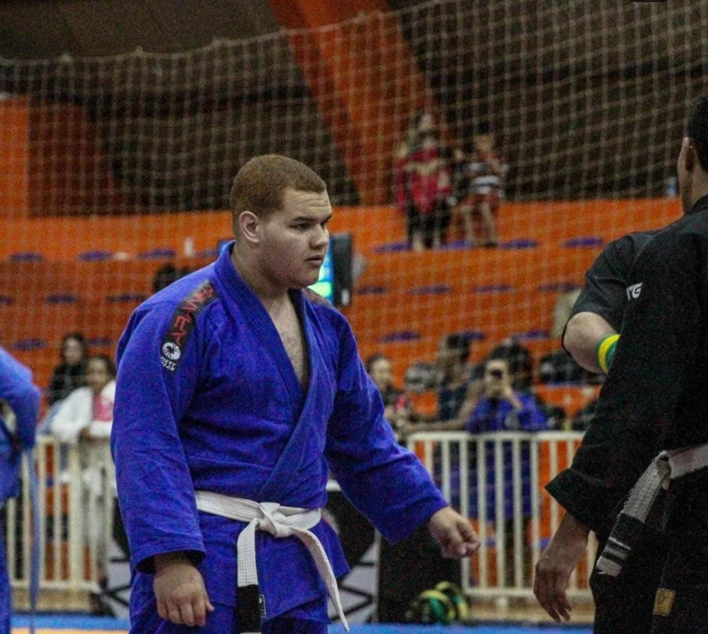

1. Helio Gracie e a História do Jiu Jitsu Brasileiro
Hélio Gracie (1913–2009), patriarca e 10º grau da faixa vermelha, revolucionou a arte suave ao adaptar as técnicas tradicionais japonesas para o biótipo frágil. Focando nos princípios da alavanca e na força do oponente, ele moldou a arte como um sistema definitivo de defesa pessoal e base do Brazilian Jiu-Jitsu (BJJ)
2. Luta do Roger Gracie a Jacaré

A histórica rivalidade entre Roger Gracie e Ronaldo "Jacaré" teve seu ápice na final do absoluto do Mundial de Jiu-Jitsu da IBJJF de 2004, quando Roger encaixou uma chave de braço que lesionou gravemente o braço de Jacaré, mas este resistiu heroicamente sem desistir e venceu a luta por pontos.
3. Meu primeiro campeonato

A alguns meses participei do 1o campeonato de jiu, no CIJJ (Circuito do interioir de jiu jitsu) etapa de Votuporanda, infelizmnete não ganhei, mas a experiencia foi incrível